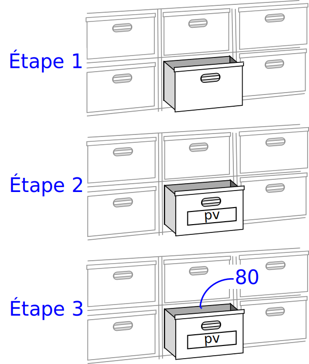

6.1.1 Les variables⚓︎
Écrire un programme, c'est traiter des données. Le plus souvent numériques en cours de Mathématiques ou de Physique-Chimie, elles peuvent être aussi d'autres types en NSI: chaîne de caractères (texte), tableaux (ensemble de valeurs), booléens (vrai/faux), ...
Pour stocker, manipuler et modifier ces données au fil du programme, on crée des variables qui vont permettre de les nommer ces données et d'y avoir accès simplement.
1. Affectation⚓︎
Admettons qu'on souhaite programmer un jeu de combat de Pokémons (ou tout autre personnage). Dans ce programme il faudra prendre en compte de nombreux attributs des Pokémons, par exemple les points de vie (PV). Pour chaque Pokémon, ces PV sont assez évidemment amenés à varier tout au long de l'exécution du programme. Le programmeur ne peut donc pas connaître la valeur de ces PV pendant le programme. Il lui faut manipuler une variable, c'est à dire un nom associé à cette valeur, qui elle est stockée en mémoire.
Notion de variable
Une variable est une association entre un nom (son identifiant, voir 4.) et une valeur (de n'importe quel type, voir 3.).
Associer une valeur à une variable (nouvelle ou déjà créé) s'appelle une affectation.
Par exemple, si mon Pokémon a 80 points de vie en début de partie, je peux créer une variable en affectant la valeur 80 au nom pv.
En Python, on écrira:
pv = 80
Vocabulaire
-
Par abus de langage, on confond souvent variable et nom de variable. Ici on parlera de la variable
pv. -
La première fois qu'on affecte une valeur à une variable, on dit qu'on l'initialise.
Attention
- Le symbole
=n'a rien à voir avec le symbole \(=\) utilisé en mathématiques. - On commence toujours à gauche par la variable à affecter, cette instruction n'est pas symétrique. On obtiendrait une erreur (essayez) avec:
🐍 Script Python
80 = pv - En effet cette instruction est lue par Python de droite à gauche : on met la valeur
80dans la variablepv. En langage naturel dans un algorithme, on écrirait :pv ← 80. C'est ainsi qu'il faut se le représenter mentalement.

On peut1 se représenter cette affectation par une métaphore, où l'on représente la mémoire de l'ordinateur comme une gigantesque commode avec d'innombrables tiroirs.
Étape 1: Lorsqu'on affecte la valeur 80 à la variable pv, l'ordinateur commence par trouver un tiroir vide.
Étape 2: Ensuite il nomme ce tiroir pv, comme s'il lui collait une étiquette dessus.
Étape 3: Enfin il dépose dans ce tiroir la valeur 80.
Désormais - tant qu'on ne lui aura pas affecté une autre valeur - chaque fois qu'on utilisera la variable pv dans notre programme, l'ordinateur utilisera la valeur 80.
Si on affecte une nouvelle valeur à la variable pv, alors l'ancienne disparaît (on dit qu'elle est écrasée).
2. Expressions et évaluation⚓︎
Regardons l'exemple suivant:
>>> a = 2
>>> a = 4
>>> a
4
>>> b = a + 3
>>> b
7
>>> b = c + 1
Traceback (most recent call last):
File "<pyshell>", line 1, in <module>
NameError: name 'c' is not defined
>>>
Analyse ligne par ligne
On initialise la variable a à 2.
On réaffecte une nouvelle valeur, 4, à la variable a.
On demande la valeur associée à a. Python répond logiquement 4: la valeur 2 a été écrasée.
On crée une nouvelle variable b à laquelle on affecte a + 3. Ceci est une expression, Python doit au préalable l'évaluer avant de l'affecter. Dans l'ordre:
- Python lit d'abord le membre de droite
a + 3. - Il récupère la valeur stockée dans
a, c'est-à-dire4. - Il évalue ensuite l'expression, ici il fait une addition :
4 + 3. - Il affecte à
bla somme obtenue, c'est-à-dire7. On le vérifie aux lignes 6 et 7.
On réaffecte à b le résultat de l'expression c + 1. Or aucune variable nommée c n'a été déclarée : on obtient une erreur, puisque Python n'a pas de valeur associée à c.
3. Types de variables⚓︎
Pour l'instant, les variables que nous avons manipulées contiennent toutes des nombres entiers.
Mais imaginons un programme qui doive manipuler les noms des Pokemons... Ce ne seront plus des nombres, mais des mots chaînes de caractères.
Pour différencier la nature de ce que peut contenir une variable, on parle alors de type de variable.
En voici quelques uns, que nous découvrirons au fil de l'année :
Types de base
Voici les types Python les plus fréquemment utilisés cette année:
| Type Python | Traduction | Exemple |
|---|---|---|
int |
entier | 42 |
float |
flottant (décimal) | 3.1416 |
str |
chaîne de caractères (string) | "NSI" |
bool |
booléen (True ou False) | True |
tuple |
p-uplet | (255, 127, 0) |
list |
liste | [0, 1, 2, 3, 4, 5] |
dict |
dictionnaire | {'Homer':43, 'Marge':41, 'Bart':12, 'Lisa':10, 'Maggie':4} |
function |
fonction | print |
Connaître le type d'une variable
Il suffit dans la console d'utiliser la fonction type.
>>> a = 1
>>> type(a)
<class 'int'>
>>>
Essayez avec une variable du type str:
En cas d'erreur
Une chaîne de caractères s'écrit avec des guillemets. Sans, Python l'interprète comme une variable...
Jusqu'à présent, nous ne nous sommes pas occupés de préciser à Python le type de notre variable.
a = 1
Mais dans certains langages, c'est obligatoire ! En C par exemple, il faut écrire :
int a = 1;
a n'aura pas le droit de contenir autre chose qu'un nombre entier.
Si on écrit ensuite
a = "test";
Le compilateur C renverra une erreur : on ne peut pas stocker une chaîne de caractères dans une variable qu'on a créée comme étant de type entier.
Et en Python ?
>>> a = 1
>>> type(a)
<class 'int'>
>>> a = "test"
>>> type(a)
<class 'str'>
Python a changé tout seul le type de notre variable, sans intervention ! On parle de typage dynamique.
Source d'erreurs
Ce typage dynamique, s'il allège la déclaration de variables, peut également être la cause de bugs...
C'est pourquoi il faut toujours avoir en tête le type des variables qu'on manipule.
4. Règles de nommage⚓︎
Pour nommer correctement une variable, il existe des règles à respecter.
Règles obligatoires
-
le nom de la variable ne peut contenir que les caractères suivants:
- des lettres non accentuées (attention, minuscule et majuscule sont des caractères différents)
- des chiffres (mais pas comme premier caractère)
- le tiret du bas _ (underscore, tiret du 8)
-
le nom de la variable ne doit pas commencer par un chiffre;
- le nom de la variable ne doit pas contenir d'espace;
- le nom de la variable ne doit pas être un mot clé du langage.
Mots clé de Python
| and | as | assert | break | class | continue | def | del |
| elif | else | except | False | finally | for | from | global |
| if | import | in | is | lambda | None | not | or |
| pass | raise | return | True | try | while | with | yield |
Hormis pour les indices (de boucles, de tableaux...) un nom de variable (dans un programme destiné à être lu, par vous ou quelqu'un d'autre) doit impérativement avoir du sens
Oui mais pour donner du sens, il faut souvent plusieurs mots... La longueur du nom de la variable n'est plus un problème depuis que la grande majorité des IDE proposent la complétion automatique. Mais comment former ces longs mots ?
Comment accoler des mots
- S'il est composé, le nom peut être de la forme:
snake_case: les mots sont séparés par des underscores. Conseillé en Python.camelCase: les mots sont séparés par des majuscules mais la 1ère lettre est minuscule. Conseillé en Javascript.PascalCase: les mots sont séparés par des majuscules et la 1ère lettre est majuscule. Conseillé en C.kebab-case: les mots sont séparés par des tirets courts. Conseillé en HTML - CSS.
Sans surprise, en Python, nous utiliserons donc le snake_case.

Règle d'or
On ne donne jamais un nom de variable au hasard, on le choisit pour qu'il soit explicite.
C'est-à-dire que si on doit manipuler une variable qui stocke l'âge du capitaine, il faut l'écrire non pas a mais age_capitaine.
# PAS BIEN
if d == 1:
cep += vm
# BIEN
if date == 1:
compte_epargne += versement_mensuel
5. Exercices⚓︎
Téléchargez le notebook d'exercices : T6.1_Exercices1.ipynb
-
Mais ce n'est pas tout à fait exact. On verra exactement plus tard comment cela se passe. Pour l'instant, cette image mentale suffira. ↩